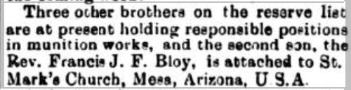

Francis Joseph Field Bloy 1879 - 1941
[ Home ] | [ Calendar ] | [ Surnames Index ] | [ Family History ]Francis Bloy, the husband of Alice Mary Pointer (the first cousin three-times-removed on the father's side of Nigel Horne), was born in Forncett, Norfolk, England on Dec 14, 18791 and married Alice (with whom he had 2 children: Francis Eric Irving and Dulcie Isabella) at Salem Chapel, Birchington, Kent, England on Aug 31, 19012.
Throughout his life, Francis lived in several places: on Kingsdown House, St Peters Park Road, Broadstairs, Kent on Apr 2, 19113; in Maricopa, Arizona, USA on Jan 1, 19204; in Kirkwood, St. Louis, Missouri, USA on Apr 1, 19305; and in Pasadena, Los Angeles, California, USA on Apr 1, 19406.
He died on Jun 16, 1941 in California.
Children
- Francis Eric Irving was born on Dec 17, 1904
- Dulcie Isabella was born on Jun 22, 1907
Citations
- England & Wales births 1837-2006 - Findmypast
- England & Wales Marriages 1837-2005 - Findmypast
- 1911 Census for England & Wales - Findmypast (was age 31 and the head of the household)
- US Census 1920 - Findmypast (was age 40 and the head of the household)
- US Census 1930 - Findmypast (was age 50 and the head of the household)
- US Census 1940 - Findmypast (was age 60 and the head of the household)
Media
Thanet Advertiser 7 Sep 1901
Thanet Advertiser - 24 Feb 1917

England & Wales births 1837-2006 - BMD/B/1880/1/AZ/000055/320
1940 US Census Transcription - USC-1940-1483395319
England & Wales marriages 1837-2008 - BMD/M/1901/3/AZ/000037/226
Family Tree

Generated by ged2site. Last updated on Nov 13, 2024